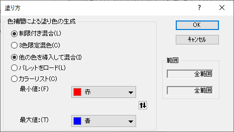
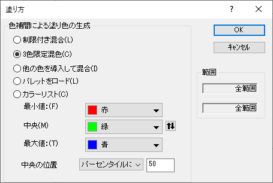
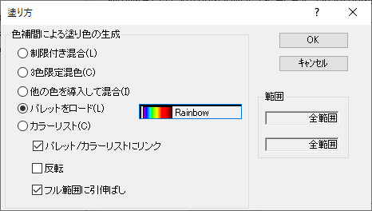
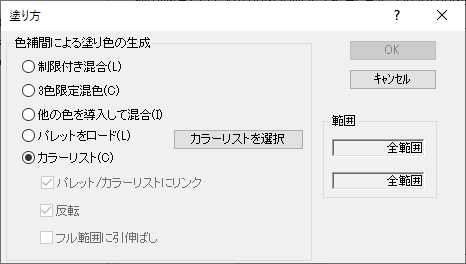

このタブは、プロットの色プロパティが、列または列ラベル行の値にマッピングされている場合に使用できます。レベル、塗り色、再スケールモードを編集できます。
Note：複数レイヤのグラフの場合、レイヤごとに背景色を適用している場合、このカラーマップタブがページレベルでも表示され、レイヤの背景色のカラーマップをカスタマイズできます。
| レベル |
Originは、Y方向またはZ方向に沿って最小値と最大値を検索して、8色のレベルを作成するための増分を計算し、レベルのデフォルトセットを表示します。最小値より小さい値および最大値より大きい値を表すための2つのレベルが追加されます。個々の値はダブルクリックして、リストで編集することができます。また、右側のパネルで、レベルヘッダをクリックし、レベルの設定ダイアログを開きます。そして、レベルをグループとして編集できます。 |
|---|---|
| 塗りつぶし |
Originはデフォルトで、赤と青の間に黄色と緑を導入したカラーリストを使います。個々の色をクリックしてリスト内で編集するか、色塗りヘッダをクリックして、塗り方ダイアログを開いて、グループとして色塗りの方法と属性を編集できます。 |
レベルの値を編集するには
レベルの全ての範囲を編集するには
最大または最小レベルを編集するには
または、
または、
スケールタイプを選択します。スケールタイプについての詳細は、ここをご覧下さい。 さらに、レベル間の間隔を設定したり、主レベルと副レベルの値を設定して手動でレベル数を指定することができます。
開始レベルを設定して最初の主レベルの値を指定できます。
|  |  |
|  |  |
| 制限付き混合 | このラジオボタンを選択すると、最小値(開始)レベルと最大値(終了)レベルの塗り色を選択し、その間を2色の線形的に混ぜ合わされた混合色で塗り分けます。 |
|---|---|
| 他の色を導入して混合 | このラジオボタンを選択すると、Originが自動的に補色を導入して混合色を作成します。 このオプションでは、｢制限付き混合｣オプションの色味と比べてよりはっきりした塗り分けができます。 |
| 3色制限付き混合 | このオプションでは、塗りつぶしの初期値(開始)、中間値(中央)と終了値(終了)を設定し、範囲内のセルを3色のグラデーションで塗りつぶします。
さらに、中央の位置を以下のように決定します。
|
| パレットをロード | パレットをロードし、塗りつぶし色として適用します。パレットの選択ボタンをクリックして、40種類の組み込みパレットから1つのパレットを選びます。さらに、パレットのリストからさらに他のパレット... をクリックしてユーザ定義のパレットを開くことができます。
|
| カラーリスト | カラーリストをロードし、色の塗りつぶしとして適用します。カラーリストを選択ボタンをクリックして、デフォルトやユーザ定義カラーリストを選ぶことができます。
|
範囲グループには、現在のダイアログボックスで設定できるレベルの範囲が表示されます。 デフォルトでは、2つの範囲ボックスには全範囲 の値が表示されます。
このグループのボタンを使ってレベルを挿入または削除できます。
レベルを挿入するには
レベルを削除するには
4つのボタンで、カラーマップテーマの編集ができます。「レベルと色のみ」のあるチェックボックスが灰色になっていて、チェックが付いていることを確認してください。
現在のカラーマップをクリップボードにコピーします。
クリップボードにカラーマップの値を置くと、クリップボードにあるカラーマップ貼り付けボタンがアクティブになり、現在のものに置き換えられます。
*.othファイルとして、現在のカラーマップを保存します。
*.othファイルとして保存されたカラーマップをロードして、現在のものに置き換えます。
このグループでは、ソース列もしくは列ラベル行の欠損値のしきい値を指定できるほか、しきい値に従って値を解釈する方法を指定できます。ドロップダウンリストで演算子を選択して、しきい値より大きい/小さい/等しい値を欠損値として指定できます。これは、-- として表示される Originの欠損値に追加されます。
次に、色ボックスをクリックして、これらの欠損値の色を指定できます。
再スケールモードドロップダウンリストは、現在の値が変わったときに、カラーマップタブで設定したレベルを更新するかどうかを制御します。
| ノーマル |
Originがデータ セット内の最小値と最大値を自動で検出し、均等なサイズのレベルとそれに対応する色を作成します。 |
|---|---|
| 手動 |
カラーマップタブで設定された色レベルと色が維持されます。これは、データセットの範囲に影響されません。 このモードでレベルや色を修正するには、レベルと色の制御を編集しなければなりません。 |
| 開始固定 |
データセットの値に関係なく、最小のレベルは変更されません。 |
| 終了固定 |
データセットの値に関係なく、最大のレベルは変更されません。 |
| 自動 |
データ範囲が変更したら自動で色レベルと色塗りを再スケールします。 |